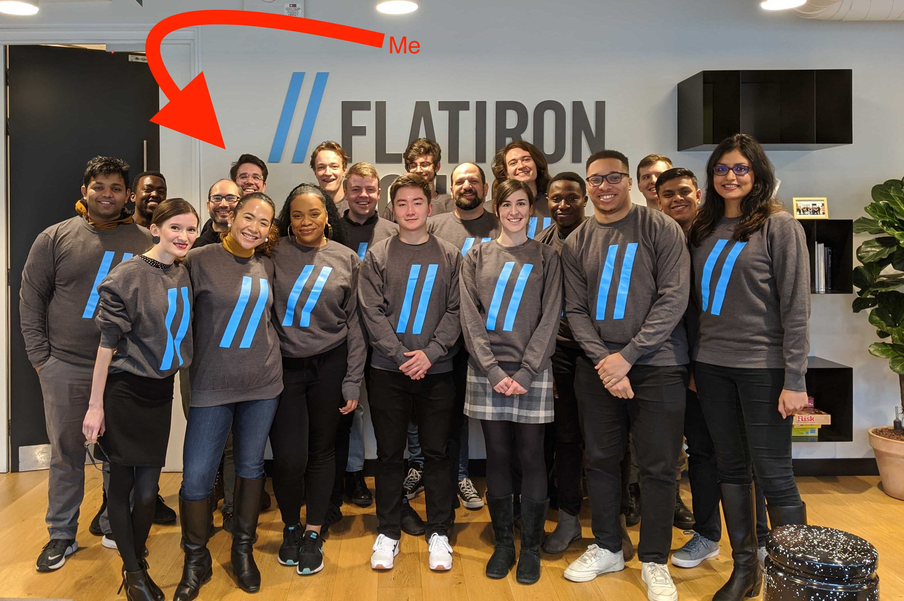

My name is David John Baker, I’m an interdisciplinary researcher and educator.
Currently, I work as a Lead Instructor of Data Science at
Flatiron School in London, England where I combine my love of research, programming, and teaching to help students succeed as they learn the skills they need in order to begin a new career.
Our First London Data Science cohort
Prior to working at Flatiron School, I completed my Ph.D in Music Theory at
Louisiana State University and also hold an MSc. from Goldsmiths, University of London in
Music, Mind and Brain and a B.M. from
Baldwin Wallace University in Instrumental Performance.
I’m a card-carrying
music theorist who likes to
publish research in psychology journals and currently work in the world of data science education.
As a researcher, I feel most at home working between disciplines and think the best questions to be asked come from either questioning fundamental assumptions people hold about how we see the world or taking a clear, action-based approach to solving a specific question.
Most of the research I find personally meaningful happens when trying to investigate musical cognition with scientific methods and taking time to think about what it means to work between
the two cultures.
Combining critical thinking about problems with practical ways of questioning assumptions fits nicely within the world of
data science.
In my current role, I teach students looking to change their careers how to ask meaningful questions about the world around them whilst teaching them practical tools to further explore those questions.
Thanks for being interested in me!
Below you will find my:
Work Experience
Lead Instructor, Data Science
Sep 2019 –
Present
London, England
- Led ~20 students every six weeks through 15 week data science bootcamp
- Lectured on basic Python for data science, probability and statistics, machine learning, and advanced topics
- Guided students through portfolio capstone projects
- Deliver Enterprise training for corporate clients
- Developed curricula suited for London campus needs
- Delivered over 50 hours of lectures via Zoom platform
- Performed duties as required as senior managerial role (hiring, administration)
Dissertation Award Fellow
Aug 2018 –
May 2019
Baton Rouge, Louisiana
Research and Evaluation Residential Volunteer Worker
Jun 2018 –
Jun 2019
London, England
- Volunteered twice per week at charity established in 1884 whilst living on-site
- Designed research, analyzed data, and wrote reports on projects related to wellness in older people, savings habits, safety in Tower Hamlets
- Organized Datathon where members of London data science community came together to analyze data for ongoing projects at Toynbee Hall
Graduate Teaching Assistant, Psychology Department
Aug 2017 –
May 2018
Baton Rouge, Louisiana
- Assisted in grading, testing, creation of materials for graduate level multivariate and intermediate statistics classes
- Held office hours to explain course content to students
- Courses focused on commonly used NHST statistical models used in behavioral psychology research
- Developed R supplement for course to be used in tandem with current curricula
Graduate Teaching Assistant, Music Department
Aug 2015 –
May 2017
Baton Rouge, Louisiana
- Taught remedial music theory as instructor of record three times a week to undergraduate music majors
- Responsible for all course material ranging from lectures, to homework assignments, bi-weekly recitations, to play-and-sing piano preparations, and teaching of aural-skills, held office hours.
- Taught Aural Skills Labs to second-year undergraduate students, classes focused on providing individual attention to learning how to sight-sing chromatic and atonal melodies as well as complex rhythms.